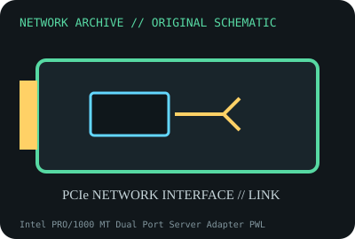

[ MODEL-SPECIFIC NETWORK HARDWARE ]
Intel PRO/1000 MT Dual Port Server Adapter PWLA8492MT
Dual-port Gigabit server NIC on legacy PCI-X/PCI bus. Confirm exact product label and revision before applying specifications.

IDENTIFICATION: Confirm manufacturer PID, hardware revision, device ID or module suffix. Nominal standards/link rates are not measurements of payload performance.
Exact specifications and compatibility
| Dedicated subcategory | Legacy networking adapters |
|---|---|
| Exact product/model | Intel PRO/1000 MT Dual Port Server Adapter PWLA8492MT |
| Bus, ports and physical interface | 64-bit PCI-X 133MHz card, backward-compatible with PCI slots as supported by host; two RJ-45 copper ports. |
| PHY, radio or protocol | Intel 82546EB dual-port Gigabit Ethernet controller; 10/100/1000BASE-T. |
| Nominal rate (not measured) | Two 1Gb/s nominal ports; aggregate 2Gb/s line rate is not benchmark data. |
| Measured throughput | No measured benchmark is claimed for a physical specimen. A valid result must record host/peer, link partner, media/cable, driver/firmware, traffic pattern, test tool and duration. |
| Drivers, OS and firmware | Intel PRO/1000 server driver family; Linux e1000 driver and legacy Windows Server packages depend on OS and card PCI ID. |
| Compatibility | Needs a physically/electrically compatible PCI-X or PCI slot and server airflow; standard PCI operation may reduce available bandwidth. |
| Variant warning | PWLA8492MT is PCI-X dual-port MT copper, not PRO/1000 MT Quad, PT PCIe, or fiber MF. Label and bracket determine fit. |
Model and revision notes
PWLA8492MT is PCI-X dual-port MT copper, not PRO/1000 MT Quad, PT PCIe, or fiber MF. Label and bracket determine fit.
Intel PRO/1000 server driver family; Linux e1000 driver and legacy Windows Server packages depend on OS and card PCI ID.
Needs a physically/electrically compatible PCI-X or PCI slot and server airflow; standard PCI operation may reduce available bandwidth.
Archival, ESD and preservation notes
Record board/PBA, PCI subsystem ID, both MACs, bracket and WOL/accessory cables. Use ESD bag and support under card when installed.
Document source URL, access date, document revision and specimen label/condition. Preserve without credentials or private configuration.
Primary manufacturer and standards sources
- Intel PRO/1000 MT Dual Port Server Adapter supportPrimary manufacturer or standards documentation; verify exact SKU and host revision.
- Intel Ethernet legacy downloadsPrimary manufacturer or standards documentation; verify exact SKU and host revision.
- IEEE 802.3 Ethernet standardsPrimary manufacturer or standards documentation; verify exact SKU and host revision.
Manufacturer statements cover the named part or its documented product family; the exact labeled revision and vendor compatibility list take precedence.